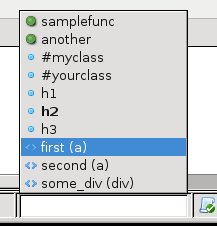

The Code Outline tool in the Komodo status bar shows the main sections of the current file. For programs it displays functions and classes. For HTML and XML files it displays all elements with IDs.
The outline is displayed in the cener of the status bar. While collapsed, this section of the status bar shows the object at the current cursor position. Clicking on it, or pressing 'Ctrl'+'F8', opens a menulist containing all major code objects in the current document.
Selecting any of the nodes in the list moves the cursor the the corresponding line in the editor. This can be done with the mouse, or by scrolling to the item with the arrow keys and pressing 'Enter'.
When the menulist is selected, the cell in the status bar becomes a filter field. Typing in this field narrows the outline to items matching what you've typed so far. You can select an item from the shorter list, or filter the list down to one item and press 'Enter'.